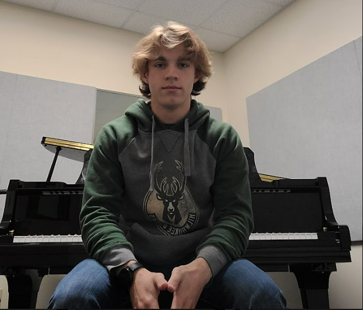

My name is Brandon Miller and I'm currently a junior at Gonzaga University studying computer science.
My goal since starting at Gonzaga is to land a job at a tech company where large-scale software products
are developed for many users. I consider myself to be a determined worker, and someone who is always
open to learn and look into new ideas or concepts. Although I'm still in the early stages of my
software career, I feel like I can bring lots to the table for any company.
I have experience coding in the following languages